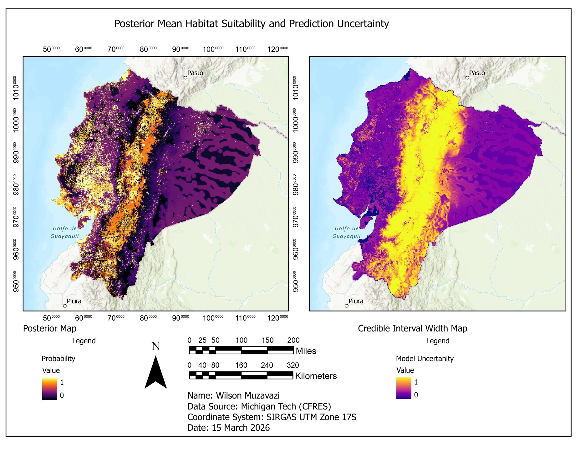
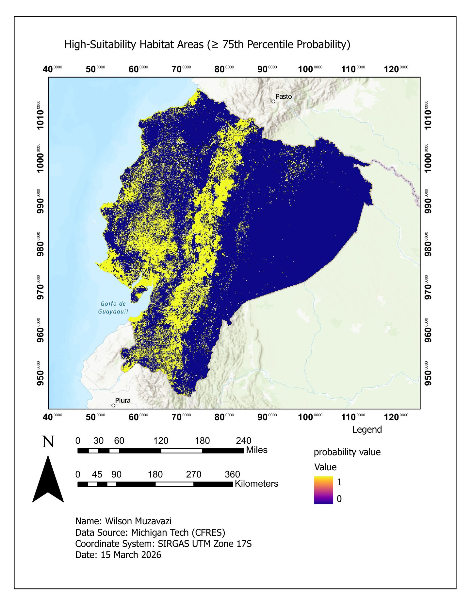

About this project
Maps the posterior mean habitat suitability for a wildlife species across Ecuador, next to the width of its credible interval, so the most likely habitat and the least certain predictions can be compared directly.
A second map isolates high-suitability habitat, the areas at or above the 75th percentile of predicted probability.